This first annual Dogtown Street Musician's Festival was held at the intersection of Tamm and Clayton
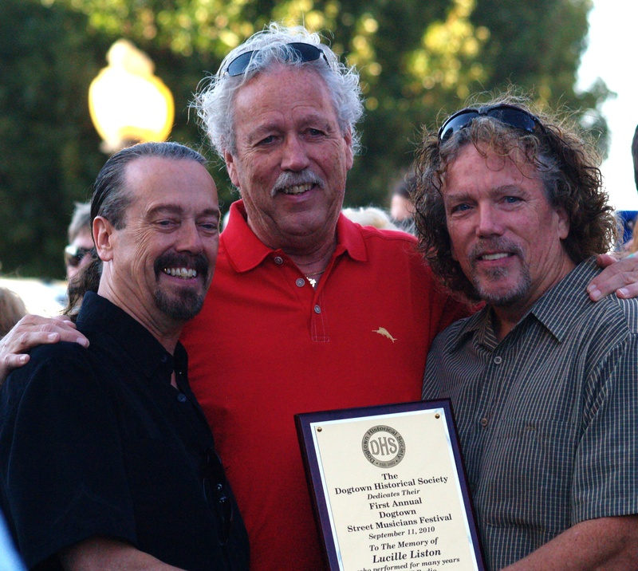
For a photo and article on Lucille Liston and the Texas Bluebonnets see: Lucille Liston's musical history
The dedication plaque was accepted by Lucille Liston's three sons and the founders of the band "Mama's Pride" - a salute to their musical mother.
From left: Mike, Danny and Pat. Photo by Joe Weisbrod
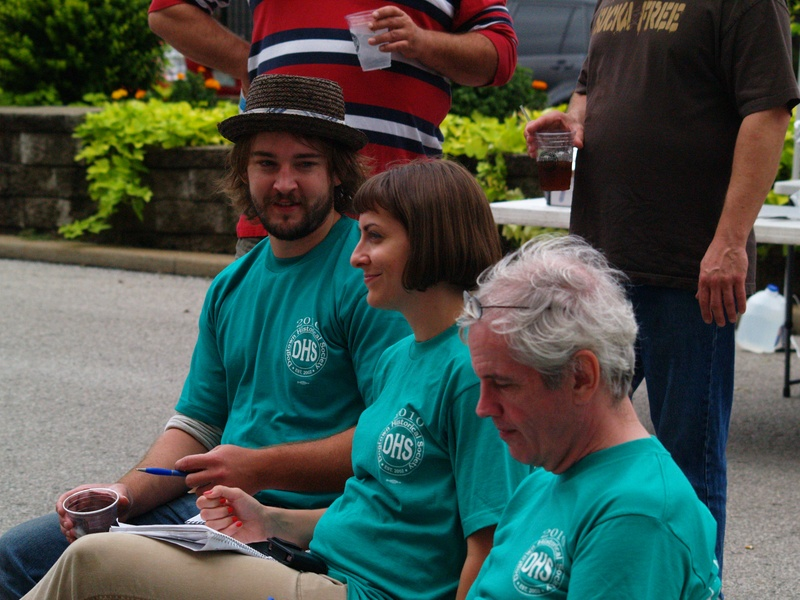
Our Three Judges - From left: Eric Schad, Crystal Brown and Bill Costello
Photo by Joe Weisbrod
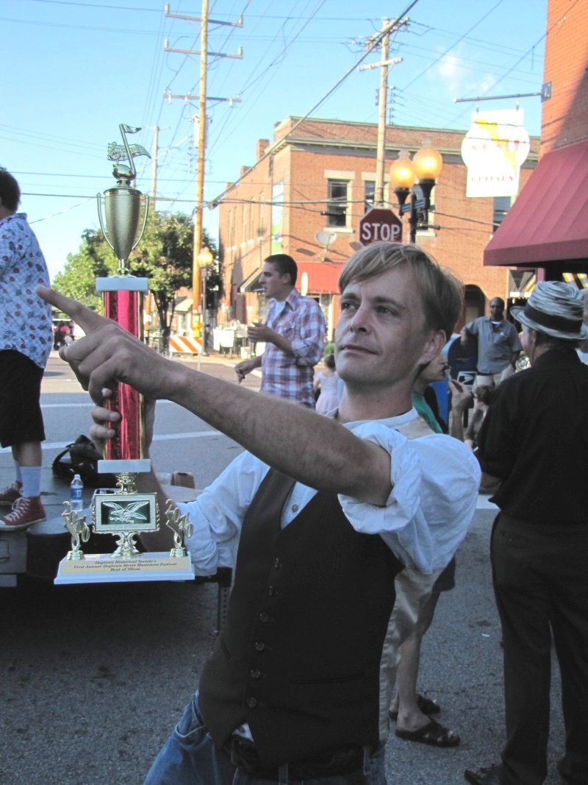
Winner: Best of Show - Bryson Gerard
Photo by Rich Sprandel
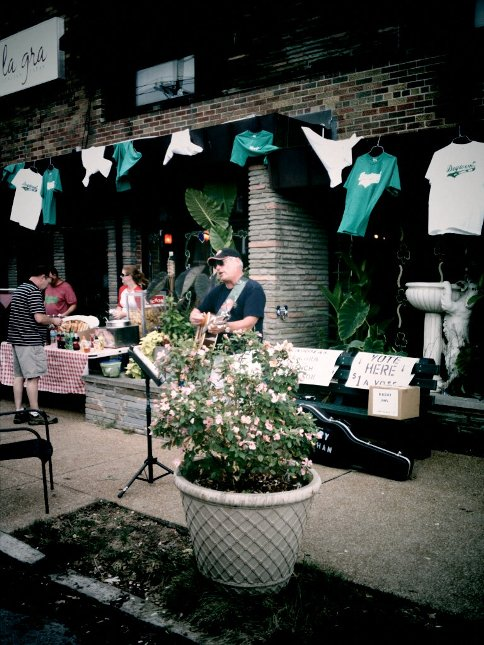
Winner: The People's Choice - Gary Sluhan
Photo by 5 Score Pachyderm
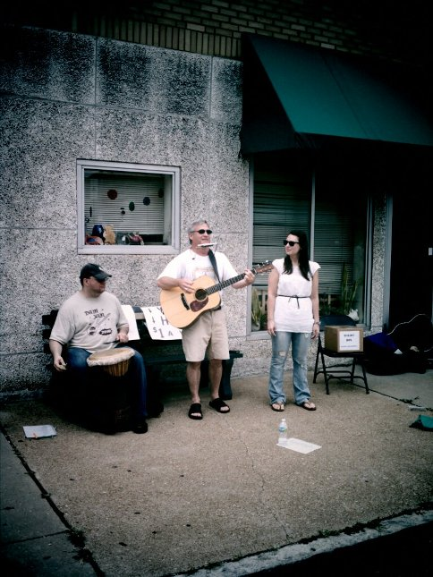
Winner: The Best Original Song - "Basement" Bob Hemmer
Photo by 5 Score Pachyderm
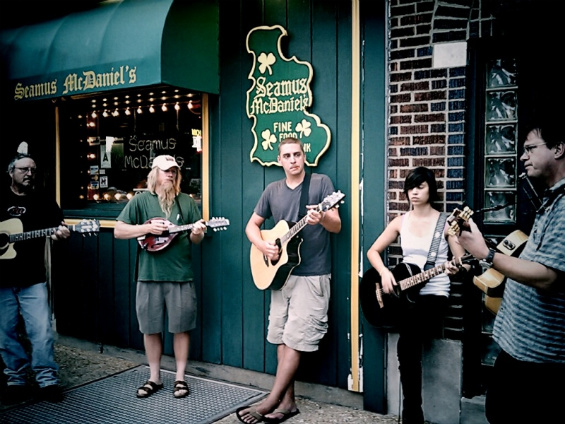
A group of Musicians at a sound check prior to the festival
Photo by 5 Score Pachyderm
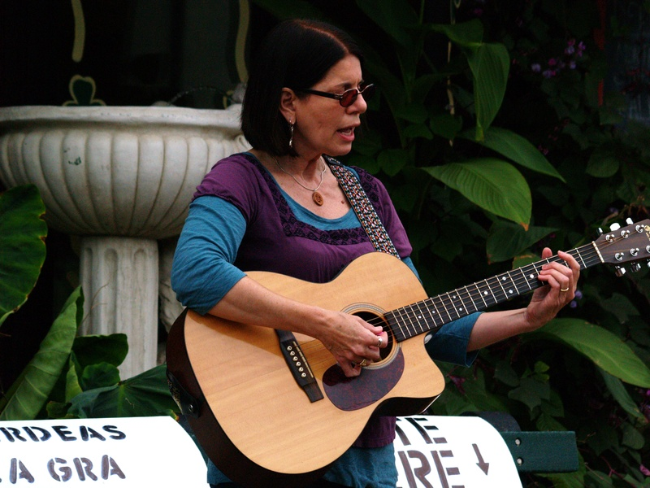
Jade Anna Baisa
Photo by Joe Weisbrod
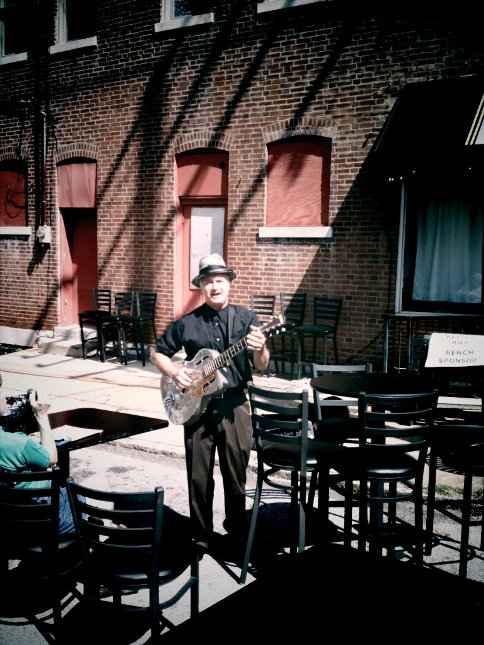
Bob Case
Photo by 5 Score Pachyderm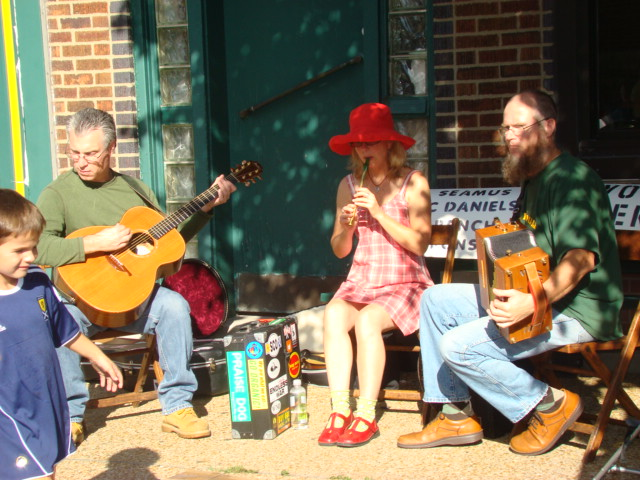
Marcia Whelan Photo by Sally Sharamitaro
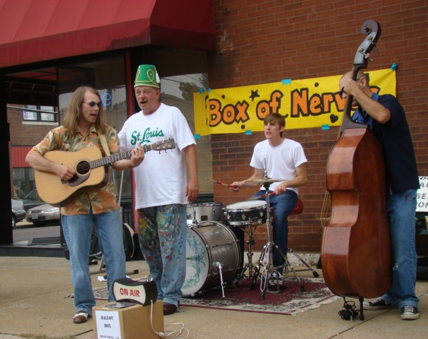
Box of Nerves
Photo by Sally Sharamitaro
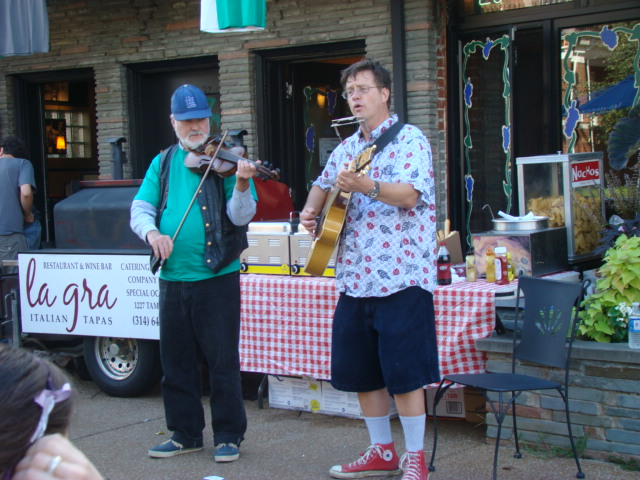
Raymond Gude Photo by Sally Sharamitaro
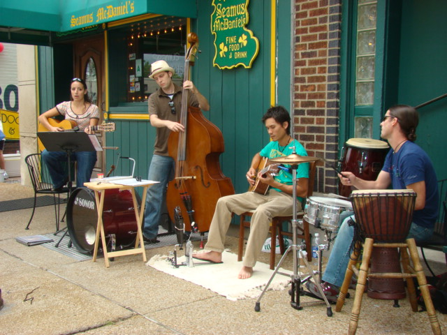
One Take
Photo by Sally Sharamitaro
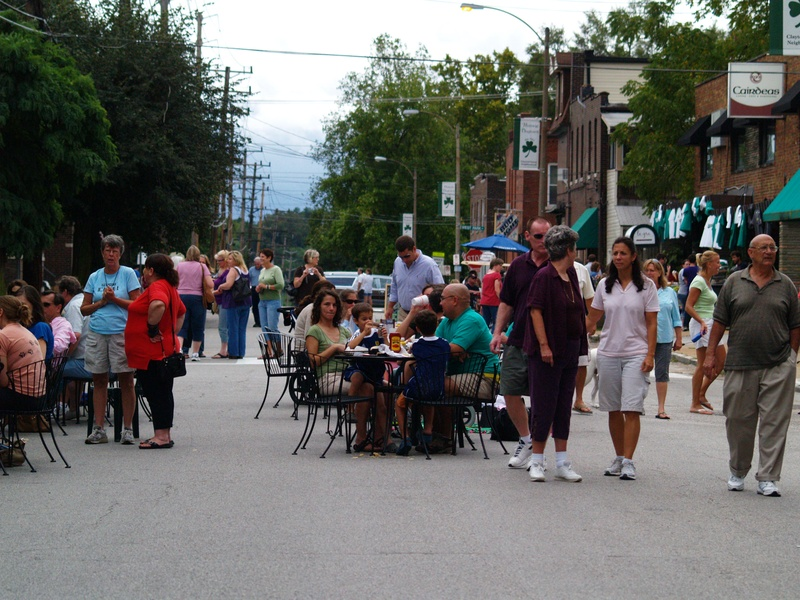
Nice photo of the crowd at the festival
Photo by Joe Weisbrod
| HOME | DOGTOWN |
| Bibliography | Oral history | Recorded history | Photos |
| YOUR page | External links | Walking Tour |
{kind=link}
{kind=link}